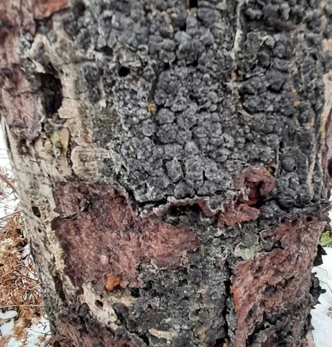

Orange-edged, peeling cankers on aspen
A patch of bark on an aspen can look relatively intact while a branch above it retains dead leaves. The combination of bark stages and the location of the declining branch helps guide inspection.

Inspect the plant
On aspen, trace a patch back to a branch union or wound. Young bark may turn orange before an older center blisters and breaks away. If a broken limb exposes discolored wood, photograph it from a safe position. Avoid testing the strength of the remaining attachment by pulling on the branch.
Distinguish similar signs
Inspect the exposed surface from the ground. A mottled center and gray or black raised cushions help distinguish a perennial canker from a fresh scrape.
Choose a response
Small affected branches can be removed in dry weather. A trunk lesion can weaken the tree at the canker and deserves a structural assessment.
Follow up
Look above the lesion for undersized leaves that brown and stay attached. Record its height and position for the arborist.
A detail to record
On a smooth-barked young aspen, compare the patch with a healthy branch junction on the same trunk. Normal branch scars repeat at several nodes; the irregular orange edge may extend well beyond a node.
Trace the dead shoot back to the bark injury
Trace a dead shoot inward before linking it to a patch of peeling bark. Crossing branches can give the impression that an injury belongs to the shoot above it. If the dieback really is beyond the patch, record how far it is from the trunk. If the foliage beyond it is healthy, document that too. Leave attached bark in place.